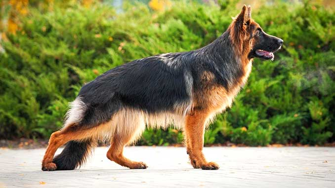
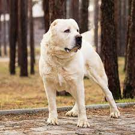
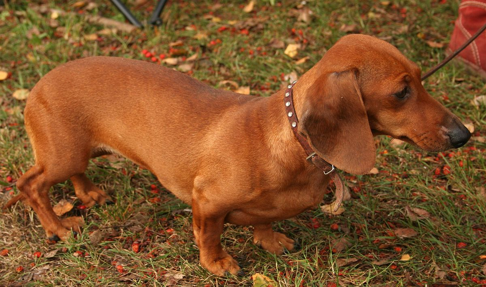
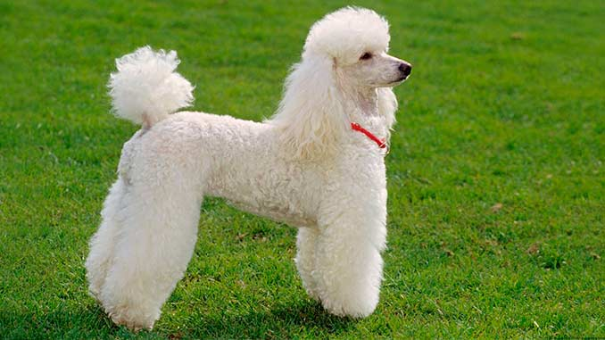

Соба́ка (лат. Canis familiaris, или Canis lupus familiaris) — домашнее животное, одно из наиболее популярных (наряду с кошкой) животных-компаньонов. Домашняя собака была описана как самостоятельный биологический вид Canis familiaris Линнеем в 1758 году; в настоящее время данное научное название считается организациями, такими как Американское общество маммалогов[2][3][4]. Некоторые источники (например, ITIS и MSW3) признают собаку подвидом волка (Canis lupus familiaris)[5][6]. В русскоязычных письменных источниках слово «собака» в значении соответствующего животного встречается по крайней мере с 1475 года (начиная с грамоты князя Андрея Васильевича Меньшого Кириллову монастырю)[7][8]. С зоологической точки зрения, собака — плацентарное млекопитающее отряда хищных семейства псовых. Собаки известны своими способностями к обучению, любовью к игре, социальным поведением. Выведены специальные породы собак, предназначенные для различных целей: охоты, охраны, тяги гужевого транспорта и другого, а также декоративные породы (например, болонка, пудель). При необходимости разграничения по полу употребляются термины «кобе́ль» (самец) и «су́ка» (самка); в обиходной речи — «пёс» и «собака» соответственно. Детёныши собаки называются щенками или кутятами.
| Немецкая овчарка | Алабай | Чихуахуа | Такса | Пудель |
|---|---|---|---|---|
|  |  | |
 |  |